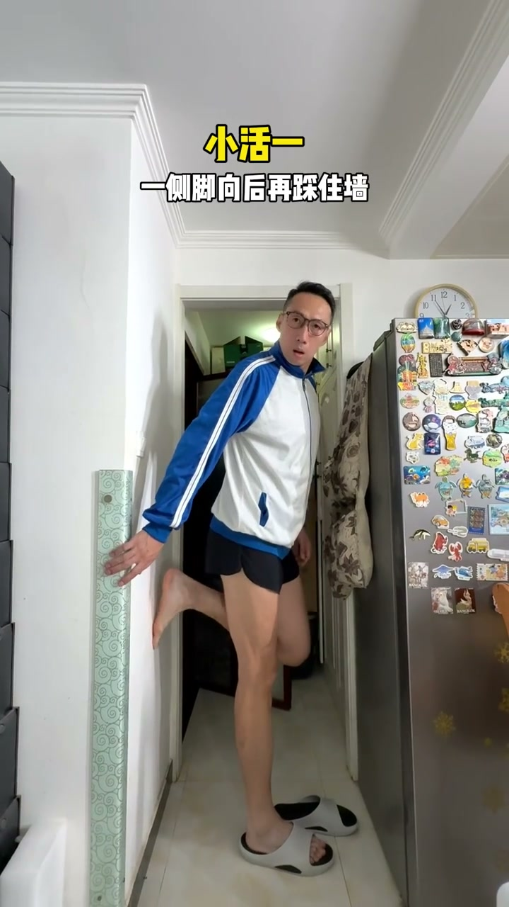
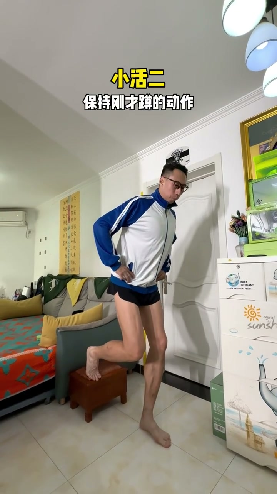
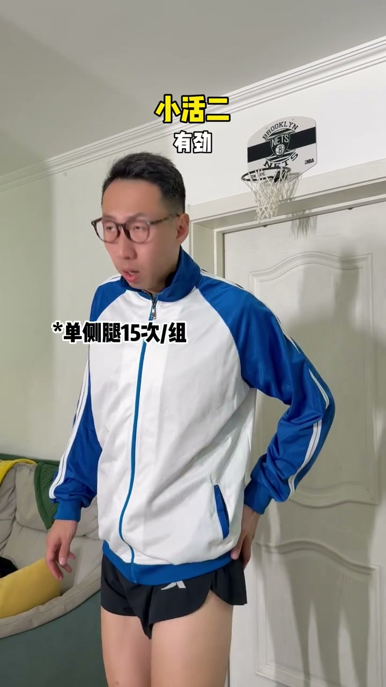

01
中文
我练送髋啊，爷就没有点针对性的训练？
EN
I'm working on hip drive—surely there's a targeted drill.
表达提示hip drive（送髋）

Scene English · 运动 · 跑步
4 Tips to Nail Hip Drive While Running
🎧 语音讲解
Warm-Up: Wall Lunge to Fire Up the Glutes
情境练送髋之前先激活臀肌：保持站姿，身体前倾不靠墙，一侧脚向后踩住墙，上半身向前趴30度，重心向下蹲再起来，做15次，让臀部先有感觉。
我练送髋啊，爷就没有点针对性的训练？
I'm working on hip drive—surely there's a targeted drill.
表达提示hip drive（送髋）
保持你现在的站姿，身体往前别靠墙，一侧脚向后再踩住墙。
Keep your stance, lean forward off the wall, step one foot back onto it.
表达提示stance（站姿）
上半身向前趴30度，重心向下蹲再起来，臀部有感觉没？
Fold forward 30°, squat down and rise—feel it in your glutes?
表达提示glutes（臀部肌肉）
15次够了，然后踩住你后面的小椅子。
15 reps is enough; now step onto the stool behind you.
表达提示rep（次数）
hip drive（送髋
stance（站姿

Rise and Drive the Opposite Knee
情境保持刚才蹲的动作，起来的瞬间把对侧腿抬起来、把手臂摆起来，带点爆发力。这是把臀部力量转化为跑步动作的第一步。
保持刚才蹲的动作，起来的瞬间把对侧腿抬起来。
Keep the squat, and as you rise, drive the opposite knee up.
表达提示drive the knee（抬腿）
把手臂摆起来，带点爆发力，碰一下抬起来。
Swing your arms with a bit of explosion—tap and lift.
表达提示explosion（爆发力）
有感觉没？有劲！
Feel it? Yes—it's firing!
表达提示firing（发力）
drive the knee（抬腿
explosion（爆发力

Single-Leg Balance and Extension
情境双手抬平或抱手，保持单侧腿支撑，抬腿落地。单腿支撑时抬到90度向后伸展到最远方，保持平衡。这个动作训练送髋时的核心稳定。
双手抬平抱手，保持单侧腿支撑，抬腿落地。
Hold your hands out or clasp them, balance on one leg, lift and land.
表达提示single-leg support（单腿支撑）
单腿支撑的时候，抬到90度向后伸展到最远方，保持平衡。
On one leg, raise the knee to 90° and extend back as far as you can.
表达提示extend（伸展）
做得不错，感觉做起来很稳。
Nice work—feels really stable.
表达提示stable（稳定的）
single-leg support（单腿支撑
extend（伸展

In-Place Arm Swing With Hip Drive
情境原地腿伸开，摆臂的瞬间后侧髋关节向前带一下再回来，一次一次做。这是把送髋直接装进摆臂节奏里的关键动作。
原地腿伸开，摆臂的瞬间，后侧髋关节向前带一下。
Stand tall, and at the moment you swing, drive the rear hip forward.
表达提示rear hip（后侧髋）
带一下再回来，再一次一次，带一下再回来。
Drive forward and back—again and again.
表达提示drive forward（向前带动）
可以，核心要收紧，髋关节带一点，不要你快。
Good. Keep your core tight and drive the hip slightly—don't rush.
表达提示core（核心）
rear hip（后侧髋
drive forward（向前带动

The Payoff: Hips Are Fired Up
情境练完这段对话强调臀部真的被练到，引出一个认知：跑得快的运动员并不是靠死肌肉，而是靠力量转化为跑步技术。
我现在练完，感觉髋都大了，冲爆我了。
After this, my hips feel huge—they're burning.
表达提示burning（燃烧感）
见了运动员或者肌肉块大的，那都是世界级的。
Athletes or big-muscle guys are all world-class.
表达提示world-class（世界级）
那跑得快的都是大肌肉吗？你看这转化，连动起来。
Are all fast runners muscular? Look at the transfer—it all links up.
表达提示transfer（转化）
burning（燃烧感
world-class（世界级
说送髋训练第一步
说起身抬腿
说单腿支撑
说原地摆臂送髋
说收尾感受
送髋要先激活臀肌。
只有后侧髋向前带。
不要快，要控制节奏。
核心收紧+髋带动。
快慢靠力量转化。